风生水起 占事：大盘未来二周 起卦方式：手动摇卦
公历时间：2016年1月17日11时5分
干 支：乙未年 己丑月 戊戌日 戊午时
旬 空：辰巳 午未 辰巳 子丑
乾宫：山地剥 坤宫：坤为地（六冲）
六神 伏 神 【本 卦】 【变 卦】
朱雀 ▄▄▄▄▄ 妻财丙寅木 ○ ▄▄ ▄▄ 兄弟癸酉金 世
青龙 兄弟壬申金 ▄▄ ▄▄ 子孙丙子水 世 ▄▄ ▄▄ 子孙癸亥水
玄武 ▄▄ ▄▄ 父母丙戌土 ▄▄ ▄▄ 父母癸丑土
白虎 ▄▄ ▄▄ 妻财乙卯木 ▄▄ ▄▄ 妻财乙卯木 应
螣蛇 ▄▄ ▄▄ 官鬼乙巳火 应 ▄▄ ▄▄ 官鬼乙巳火
勾陈 ▄▄ ▄▄ 父母乙未土 ▄▄ ▄▄ 父母乙未土
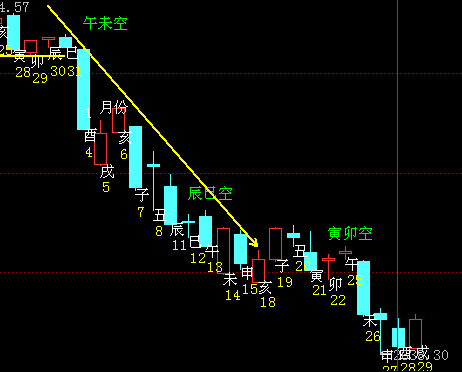
（
申日冲实寅木，为兄弟冲财，下影线。
酉日当值为主（又跌，冲实卯木算静爻，静不如动）
戌日则卯刚逢冲后又卯戌合涨。
未日助兄弟酉金大跌。
（此卦未日不如乐易：中孚之履明显）：
参考：1月第3周：中孚之履兄化父未化午，乐易。（午未合经典）.note
剥之坤，财化兄，寅化酉，经典大跌。2-17此周。旺月日旺之财化回头克。
值月旺之财化兄，照样大跌。尤其是六爻值月。2月16号到20号大盘。大黑山
起卦方式：报数起卦(7,16)加时辰起卦
公历时间：2009年2月14日11时49分 星期六
干支：己丑年 丙寅月 庚寅日 壬午时 (旬空：午未)
乾宫：山地剥 坤宫：坤为地（六冲）
六神 伏 神 【本 卦】 【变 卦】
螣蛇 ▅▅▅▅▅ 妻财丙寅木 ○→ ▅▅ ▅▅ 兄弟癸酉金 世
勾陈 兄弟壬申金 ▅▅ ▅▅ 子孙丙子水 世 ▅▅ ▅▅ 子孙癸亥水
朱雀 ▅▅ ▅▅ 父母丙戌土 ▅▅ ▅▅ 父母癸丑土
青龙 ▅▅ ▅▅ 妻财乙卯木 ▅▅ ▅▅ 妻财乙卯木 应
玄武 ▅▅ ▅▅ 官鬼乙巳火 应 ▅▅ ▅▅ 官鬼乙巳火
白虎 ▅▅ ▅▅ 父母乙未土 ▅▅ ▅▅ 父母乙未土
后炮：
1。财化兄。回头克，跌。
2. 妻财六位极位。再回头克。看来会跌幅大。（妻财值月旺而被克，跌幅深）
3。辰日合绊酉金。暂时不跌。（似乎兄弟以算合绊居多）（辰日子孙入墓，居然不跌，看来仍是以论合酉金为主）
4。亥日生合旺寅木，反弹。（更多的是冲了巳火暗动，来制克兄弟）
5。申日冲寅木暗动。反弹。（动爻暗动的例子）
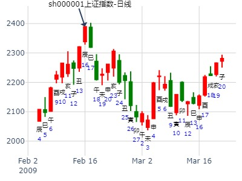
剥之坤，财化兄弟回头克，跌。小梅测601607上海医药3月份走势。
公历起卦时间：2013年2月23日17时6分 (手工指定)
干支：癸巳年 甲寅月 庚申日 乙酉时 （日空：子丑）
乾宫：山地剥 坤宫：坤为地 (六冲)
六神 伏神 本 卦 变 卦
腾蛇 妻财丙寅木 ▅▅▅▅▅ ○→ 兄弟癸酉金 ▅▅ ▅▅ 世
勾陈 兄弟壬申金 子孙丙子水 ▅▅ ▅▅ 世 子孙癸亥水 ▅▅ ▅▅
朱雀 父母丙戌土 ▅▅ ▅▅ 父母癸丑土 ▅▅ ▅▅
青龙 妻财乙卯木 ▅▅ ▅▅ 妻财乙卯木 ▅▅ ▅▅ 应
玄武 官鬼乙巳火 ▅▅ ▅▅ 应 官鬼乙巳火 ▅▅ ▅▅
白虎 父母乙未土 ▅▅ ▅▅ 父母乙未土 ▅▅ ▅▅
上九：硕果不食，君子得舆，小人剥庐象曰：君子得舆，民所载也。 小人剥庐，终不可用也。
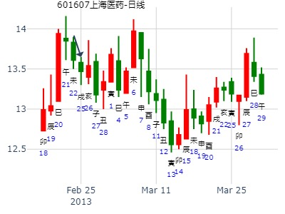
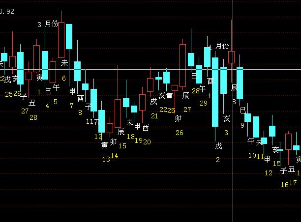
占事：大盘寅月走势
公历起卦时间：2017年2月4日15时38分 (在线摇卦)
干支：丁酉年 壬寅月 壬戌日 戊申时 （日空：子丑）
神煞：驿马－申 桃花－卯 日禄－亥 贵人－卯，巳
乾宫：山地剥 坤宫：坤为地 (六冲)
六神 伏神 本 卦 变 卦
白虎 妻财丙寅木 ▅▅▅▅▅ ○→ 兄弟癸酉金 ▅▅ ▅▅ 世
腾蛇 兄弟壬申金 子孙丙子水 ▅▅ ▅▅ 世 子孙癸亥水 ▅▅ ▅▅
勾陈 父母丙戌土 ▅▅ ▅▅ 父母癸丑土 ▅▅ ▅▅
朱雀 妻财乙卯木 ▅▅ ▅▅ 妻财乙卯木 ▅▅ ▅▅ 应
青龙 官鬼乙巳火 ▅▅ ▅▅ 应 官鬼乙巳火 ▅▅ ▅▅
玄武 父母乙未土 ▅▅ ▅▅ 父母乙未土 ▅▅ ▅▅
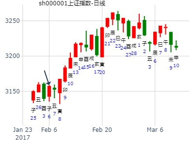
主帖标题: 2014年4月大盘涨跌卦
占事：2014年4月大盘涨跌？
公历起卦时间：2014年3月31日15时11分 (手工指定)
干支：甲午年 丁卯月 辛丑日 丙申时 （日空：辰巳）
神煞：驿马－亥 桃花－午 日禄－酉 贵人－寅，午
乾宫：山地剥 坤宫：坤为地 (六冲)
六神 伏神 本 卦 变 卦
腾蛇 妻财丙寅木 ▅▅▅▅▅ ○→ 兄弟癸酉金 ▅▅ ▅▅ 世
勾陈 兄弟壬申金 子孙丙子水 ▅▅ ▅▅ 世 子孙癸亥水 ▅▅ ▅▅
朱雀 父母丙戌土 ▅▅ ▅▅ 父母癸丑土 ▅▅ ▅▅
青龙 妻财乙卯木 ▅▅ ▅▅ 妻财乙卯木 ▅▅ ▅▅ 应
玄武 官鬼乙巳火 ▅▅ ▅▅ 应 官鬼乙巳火 ▅▅ ▅▅
白虎 父母乙未土 ▅▅ ▅▅ 父母乙未土 ▅▅ ▅▅
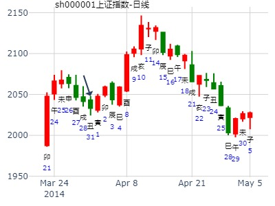
占事：2023年4月大盘涨跌？金眼牛卦
公历起卦时间：2023年3月31日16时32分 (手工指定)
干支：癸卯年 乙卯月 戊子日 庚申时 （日空：午未)
乾宫：山地剥 坤宫：坤为地 (六冲)
六神 伏神 本 卦 变 卦
朱雀 妻财丙寅木 ▅▅▅▅▅ ○→ 兄弟癸酉金 ▅▅ ▅▅ 世
青龙 兄弟壬申金 子孙丙子水 ▅▅ ▅▅ 世 子孙癸亥水 ▅▅ ▅▅
玄武 父母丙戌土 ▅▅ ▅▅ 父母癸丑土 ▅▅ ▅▅
白虎 妻财乙卯木 ▅▅ ▅▅ 妻财乙卯木 ▅▅ ▅▅ 应
螣蛇 官鬼乙巳火 ▅▅ ▅▅ 应 官鬼乙巳火 ▅▅ ▅▅
勾陈 父母乙未土 ▅▅ ▅▅ 父母乙未土 ▅▅ ▅▅
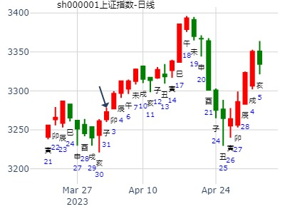
试测桂林旅游何时涨停？
出生：2020 年 性别：男 占事：没填
公历起卦时间：2020年4月1日11时49分 (电脑自动)
干支：庚子年 己卯月 甲戌日 庚午时 （日空：申酉）
神煞：驿马－申 桃花－卯 日禄－寅 贵人－丑，未
乾宫：山地剥 坤宫：坤为地 (六冲)
六神 伏神 本 卦 变 卦
玄武 妻财丙寅木 ▅▅▅▅▅ ○→ 兄弟癸酉金 ▅▅ ▅▅ 世
白虎 兄弟壬申金 子孙丙子水 ▅▅ ▅▅ 世 子孙癸亥水 ▅▅ ▅▅
螣蛇 父母丙戌土 ▅▅ ▅▅ 父母癸丑土 ▅▅ ▅▅
勾陈 妻财乙卯木 ▅▅ ▅▅ 妻财乙卯木 ▅▅ ▅▅ 应
朱雀 官鬼乙巳火 ▅▅ ▅▅ 应 官鬼乙巳火 ▅▅ ▅▅
青龙 父母乙未土 ▅▅ ▅▅ 父母乙未土 ▅▅ ▅▅
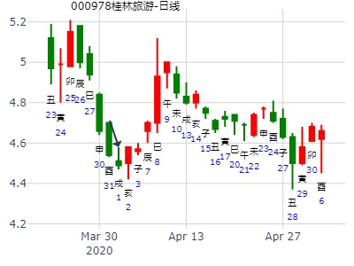
主帖标题: 上证大盘测试局45...
replyreload += ',' + 10838028;
公历：2016年05月11日09时03分 星期三
节气：立夏：05月05日09时41分 小满：05月20日22时36分
真时：2016年05月11日09时03分 北京 天安门(东经116.38度)
农历：丙申年 四月小 初五日 隅中时分 巳时
干支：丙申 癸巳 癸巳 丁巳 报数起局阳三局
旬空：辰巳 午未 午未 子丑 旬首：甲寅
值符天任在九宫 值使生门在二宫 超级奇门排宫法
┌─────────┬─────────┬─────────┐
│乙 九天 │壬 值符 │丁 螣蛇 │
│ 天蓬 丙 │ 天任 癸 │ 天冲 戊 │
│ 开门 己 │ 休门 丁 │ 生门 乙 禽庚│
│太阴 │六合 │白虎 │
├─────────┼─────────┼─────────┤
│丙 九地 │戊 │庚 太阴 │
│ 天心 辛 │ │ 天辅 己 │
│ 惊门 戊 │ 庚│ 伤门 壬 │
│螣蛇 │ │玄武 │
├─────────┼─────────┼─────────┤
│辛 玄武○ │癸 白虎○ │己 六合 马│
│ 天柱 壬 │ 天芮 乙 禽庚│ 天英 丁 │
│ 死门 癸 │ 景门 丙 │ 杜门 辛 │
│值符 │九天 │九地 │
└─────────┴─────────┴─────────┘
干支：丙申年 癸巳月 癸巳日 丁巳时 （日空：午未）
神煞：驿马－亥 桃花－午 日禄－子 贵人－卯，巳
乾宫：山地剥 坤宫：坤为地 (六冲)
六神 伏神 本 卦 变 卦
白虎 妻财丙寅木 ▅▅▅▅▅ ○→ 兄弟癸酉金 ▅▅ ▅▅ 世
腾蛇 兄弟壬申金 子孙丙子水 ▅▅ ▅▅ 世 子孙癸亥水 ▅▅ ▅▅
勾陈 父母丙戌土 ▅▅ ▅▅ 父母癸丑土 ▅▅ ▅▅
朱雀 妻财乙卯木 ▅▅ ▅▅ 妻财乙卯木 ▅▅ ▅▅ 应
青龙 官鬼乙巳火 ▅▅ ▅▅ 应 官鬼乙巳火 ▅▅ ▅▅
玄武 父母乙未土 ▅▅ ▅▅ 父母乙未土 ▅▅ ▅▅
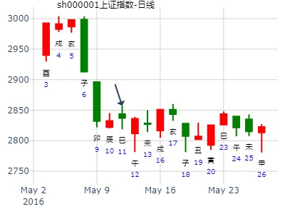
主帖标题: 5月16日至5月20日大盘预测
反吟卦,动荡反复,涨跌不定.福不上卦,事不称情.
下周一是敏感时空.巳月巳日巳时.参考
主题：沪指K线反卦
壬寅 乙巳 丙寅 己亥 (戌亥空) 壬寅年三月十三(2022/05/13 21:39:05)
山地剥 坤为地
青龙 妻财寅木 ○ 兄弟酉金 ∥ 世
兄弟壬申：玄武 子孙子水 ∥ 世 子孙癸亥 ∥
白虎 父母丙戌 ∥ 父母丑土 ∥
腾蛇 妻财卯木 ∥ 妻财卯木 ∥ 应
勾陈 官鬼乙巳 ∥ 应 官鬼乙巳 ∥
朱雀 父母未土 ∥ 父母未土 ∥
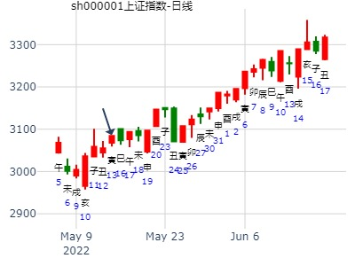
剥之坤，元亨乾坤自在测房市趋势。
公历起卦时间：2014年6月23日19时40分 (电脑自动)
干支：甲午年 庚午月 乙丑日 丙戌时 （日空：戌亥）
乾宫：山地剥 坤宫：坤为地 (六冲)
六神 伏神 本 卦 变 卦
玄武 妻财丙寅木 ▅▅▅▅▅ ○→ 兄弟癸酉金 ▅▅ ▅▅ 世
白虎 兄弟壬申金 子孙丙子水 ▅▅ ▅▅ 世 子孙癸亥水 ▅▅ ▅▅
腾蛇 父母丙戌土 ▅▅ ▅▅ 父母癸丑土 ▅▅ ▅▅
勾陈 妻财乙卯木 ▅▅ ▅▅ 妻财乙卯木 ▅▅ ▅▅ 应
朱雀 官鬼乙巳火 ▅▅ ▅▅ 应 官鬼乙巳火 ▅▅ ▅▅
青龙 父母乙未土 ▅▅ ▅▅ 父母乙未土 ▅▅ ▅▅
主帖标题: 6月12日 沪市大盘
公历时间：2015年6月11日12时17分
干 支：乙未年 壬午月 戊午日 戊午时
旬 空：辰巳 申酉 (子丑) 子丑
乾宫：山地剥 坤宫：坤为地（六冲）
六神 伏 神 【本 卦】 【变 卦】
朱雀 ▄▄▄▄▄ 妻财丙寅木 O-> ▄▄ ▄▄ 兄弟癸酉金 世
青龙 兄弟壬申金 ▄▄ ▄▄ 子孙丙子水 世 ▄▄ ▄▄ 子孙癸亥水
玄武 ▄▄ ▄▄ 父母丙戌土 ▄▄ ▄▄ 父母癸丑土
白虎 ▄▄ ▄▄ 妻财乙卯木 ▄▄ ▄▄ 妻财乙卯木 应
螣蛇 ▄▄ ▄▄ 官鬼乙巳火 应 ▄▄ ▄▄ 官鬼乙巳火
勾陈 ▄▄ ▄▄ 父母乙未土 ▄▄ ▄▄ 父母乙未土
财受克，你我都懂！ 看跌～
世爻日破月破，但是克制兄弟，当天还没危险。戌日克世，助兄弟，开跌。
[/post]
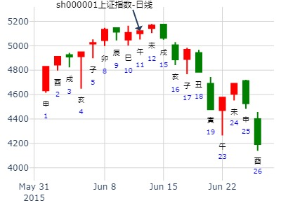
出生：没填 年 性别：男 占事：000929兰州黄河下周涨跌
排卦：元亨利贞网六爻在线排盘系统 http://www.china95.net
公历起卦时间：2016年6月11日11时45分 (电脑自动)
干支：丙申年 甲午月 甲子日 庚午时 （日空：戌亥）
神煞：驿马－寅 桃花－酉 日禄－寅 贵人－丑，未
乾宫：山地剥 坤宫：坤为地 (六冲)
六神 伏神 本 卦 变 卦
玄武 妻财丙寅木 ▅▅▅▅▅ ○→ 兄弟癸酉金 ▅▅ ▅▅ 世
白虎 兄弟壬申金 子孙丙子水 ▅▅ ▅▅ 世 子孙癸亥水 ▅▅ ▅▅
腾蛇 父母丙戌土 ▅▅ ▅▅ 父母癸丑土 ▅▅ ▅▅
勾陈 妻财乙卯木 ▅▅ ▅▅ 妻财乙卯木 ▅▅ ▅▅ 应
朱雀 官鬼乙巳火 ▅▅ ▅▅ 应 官鬼乙巳火 ▅▅ ▅▅
青龙 父母乙未土 ▅▅ ▅▅ 父母乙未土 ▅▅ ▅▅
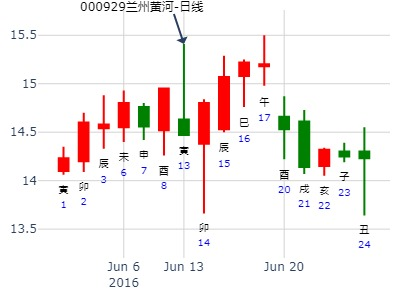
[size=12.6316px] 测2022年6月13日哪个行业版块股票收盘涨幅最好？
出生：2022 年 性别：男 占事：没填
排卦：元亨利贞网六爻在线排盘系统 https://www.china95.net
公历起卦时间：2022年6月12日14时6分 (电脑自动)
干支：壬寅年 丙午月 丙申日 乙未时 （日空：辰巳）
神煞：驿马－寅 桃花－酉 日禄－巳 贵人－酉，亥
乾宫：山地剥 坤宫：坤为地 (六冲)
六神 伏神 本 卦 变 卦
青龙 妻财丙寅木 ▅▅▅▅▅ ○→ 兄弟癸酉金 ▅▅ ▅▅ 世
玄武 兄弟壬申金 子孙丙子水 ▅▅ ▅▅ 世 子孙癸亥水 ▅▅ ▅▅
白虎 父母丙戌土 ▅▅ ▅▅ 父母癸丑土 ▅▅ ▅▅
螣蛇 妻财乙卯木 ▅▅ ▅▅ 妻财乙卯木 ▅▅ ▅▅ 应
勾陈 官鬼乙巳火 ▅▅ ▅▅ 应 官鬼乙巳火 ▅▅ ▅▅
朱雀 父母乙未土 ▅▅ ▅▅ 父母乙未土 ▅▅ ▅▅
占事：2012年3季度大盘走势 wukevin 起卦方式：手动摇卦
公历时间：2012年7月1日17时6分
干 支：壬辰年 丙午月 癸亥日 辛酉时
旬 空：午未 寅卯 (子丑) 子丑
乾宫：山地剥 坤宫：坤为地（六冲）
六神 伏 神 【本 卦】 【变 卦】
白虎 ▄▄▄▄▄ 妻财丙寅木 O-> ▄▄ ▄▄ 兄弟癸酉金 世
螣蛇 兄弟壬申金 ▄▄ ▄▄ 子孙丙子水 世 ▄▄ ▄▄ 子孙癸亥水
勾陈 ▄▄ ▄▄ 父母丙戌土 ▄▄ ▄▄ 父母癸丑土
朱雀 ▄▄ ▄▄ 妻财乙卯木 ▄▄ ▄▄ 妻财乙卯木 应
青龙 ▄▄ ▄▄ 官鬼乙巳火 应 ▄▄ ▄▄ 官鬼乙巳火
玄武 ▄▄ ▄▄ 父母乙未土 ▄▄ ▄▄ 父母乙未土
世爻子孙月破旬空为关键之玄机，后来等子月实破开涨，丑月墓兄弟也涨（此处丑冲未，无论以年月哪个论均属冲暗动，但此处主要矛盾为酉金被墓，大涨）
涨到寅月春节过完第一天就反而见顶。
（或是月空涨到寅月一出空就见顶）
所测的3季度未月墓财，跌。申酉二个月扶助兄弟，跌。（申月又冲又克财爻，跌得反而比酉月多）
酉月则为长十字线。
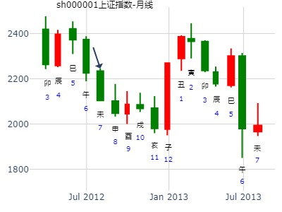
主帖标题: 借用卦 预测20160721上证升降卦
益人
收藏 2016-7-20 16:34
公历时间：2016年7月21日9时30分
干 支：丙申年 乙未月 甲辰日 己巳时
旬 空：辰巳 辰巳 (寅卯) 戌亥
乾宫：山地剥 坤宫：坤为地（六冲）
六神 伏 神 【本 卦】 【变 卦】
玄武 ▄▄▄▄▄ 妻财丙寅木 O-> ▄▄ ▄▄ 兄弟癸酉金 世
白虎 兄弟壬申金 ▄▄ ▄▄ 子孙丙子水 世 ▄▄ ▄▄ 子孙癸亥水
螣蛇 ▄▄ ▄▄ 父母丙戌土 ▄▄ ▄▄ 父母癸丑土
勾陈 ▄▄ ▄▄ 妻财乙卯木 ▄▄ ▄▄ 妻财乙卯木 应
朱雀 ▄▄ ▄▄ 官鬼乙巳火 应 ▄▄ ▄▄ 官鬼乙巳火
青龙 ▄▄ ▄▄ 父母乙未土 ▄▄ ▄▄ 父母乙未土
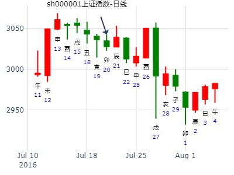
解读易友cctvppt9的卦
求测人：某人，男，庚申(1980年)，电脑摇卦(起卦方式)
占问事宜：测下周股市上证周线是阴是阳
公历：2015年8月28日22时31分，星期五。
干支：乙未年 甲申月 丙子日 己亥时 (卦身：辰)
主变卦 山地剥(乾宫) 之 坤为地(坤宫) [空亡:申、酉]
青龙 ▅▅▅▅▅○妻财丙寅木 ▅▅ ▅▅ 兄弟癸酉金 世
玄武 兄弟壬申金 ▅▅ ▅▅ 子孙丙子水 世 ▅▅ ▅▅ 子孙癸亥水
白虎 ▅▅ ▅▅ 父母丙戌土 ▅▅ ▅▅ 父母癸丑土
螣蛇 ▅▅ ▅▅ 妻财乙卯木 ▅▅ ▅▅ 妻财乙卯木 应
勾陈 ▅▅ ▅▅ 官鬼乙巳火 应 ▅▅ ▅▅ 官鬼乙巳火
朱雀 ▅▅ ▅▅ 父母乙未土 ▅▅ ▅▅ 父母乙未土
李炎解的卦：
子孙持世,财动化回头克,兄弟持月,说明目前的反弹是下跌趋势中的反弹.
周一卯日,冲实兄弟,大跌
周二辰日,父母临日,下跌
周三巳日,月日合化水,小阳
参见本月同类个股卦：
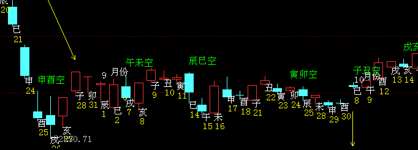
主帖标题: 总结下21日的卦例
占事：9月21-25日大盘涨跌？
公历时间：2009年9月18日16时26分 星期五
干支：己丑年 癸酉月 丙寅日 丙申时 (旬空：戌亥)
神煞：驿马—申 桃花—卯 日禄—巳 贵人—酉，亥
乾宫：山地剥 坤宫：坤为地（六冲）
六神 伏 神 【本 卦】 【变 卦】
青龙 ▅▅▅▅▅ 妻财丙寅木 ○→ ▅▅ ▅▅ 兄弟癸酉金 世
玄武 兄弟壬申金 ▅▅ ▅▅ 子孙丙子水 世 ▅▅ ▅▅ 子孙癸亥水
白虎 ▅▅ ▅▅ 父母丙戌土 ▅▅ ▅▅ 父母癸丑土
螣蛇 ▅▅ ▅▅ 妻财乙卯木 ▅▅ ▅▅ 妻财乙卯木 应
勾陈 ▅▅ ▅▅ 官鬼乙巳火 应 ▅▅ ▅▅ 官鬼乙巳火
朱雀 ▅▅ ▅▅ 父母乙未土 ▅▅ ▅▅ 父母乙未土
明日大盘 by金马奔腾
起卦hour:2015年9月10日14时13分
时间: 2015-09-10
干支: 乙未年乙酉月己丑日 (旬空: 午未 )
山地剥 坤为地
六神 伏神 本 卦 变 卦
勾陈 ▅▅▅▅▅ 妻财寅木 Ｏ→ ▅▅ ▅▅ 兄弟酉金 世
朱雀 兄弟申金▅▅ ▅▅ 子孙子水 世 ▅▅ ▅▅ 子孙亥水
青龙 ▅▅ ▅▅ 父母戌土 ▅▅ ▅▅ 父母丑土
玄武 ▅▅ ▅▅ 妻财卯木 ▅▅ ▅▅ 妻财卯木 应
白虎 ▅▅ ▅▅ 官鬼巳火 应 ▅▅ ▅▅ 官鬼巳火
腾蛇 ▅▅ ▅▅ 父母未土 ▅▅ ▅▅ 父母未土
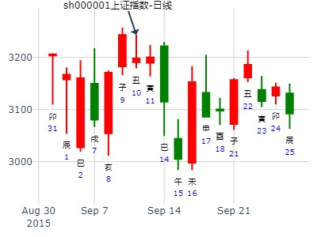
神奇制药春节前走势?
公历时间：2014年10月13日18时41分????
干 支：甲午年?甲戌月?丁巳日?己酉时 ?(子丑)?
? 乾宫：山地剥 坤宫：坤为地（六冲）?
六神? 伏 神?【本 卦】 【变 卦】
青龙 ▄▄▄▄▄ 妻财丙寅木 O->? ▄▄??▄▄ 兄弟癸酉金 世
玄武 兄弟壬申金 ▄▄??▄▄ 子孙丙子水 世 ▄▄??▄▄ 子孙癸亥水
白虎 ▄▄??▄▄ 父母丙戌土 ▄▄??▄▄ 父母癸丑土
螣蛇 ▄▄??▄▄ 妻财乙卯木 ▄▄??▄▄ 妻财乙卯木 应
勾陈 ▄▄??▄▄ 官鬼乙巳火 应 ▄▄??▄▄ 官鬼乙巳火
朱雀 ▄▄??▄▄ 父母乙未土 ▄▄??▄▄ 父母乙未土
丑月墓兄弟见底。
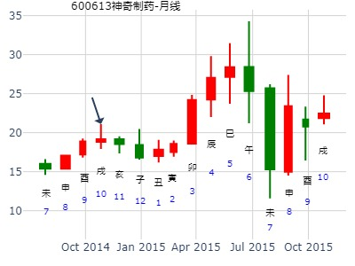
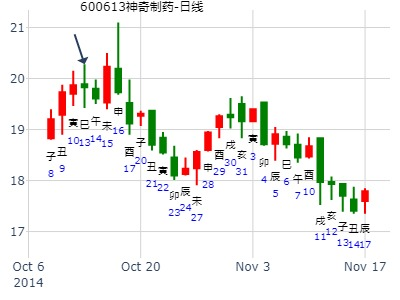
占事：钱币卦大盘？?王 ?10月17日大盘。
公历时间：2014年10月17日9时50分????
干 支：甲午年 甲戌月 辛酉日 癸巳时
旬 空：辰巳?? 申酉???(子丑)?? 午未 ?
乾宫：山地剥 坤宫：坤为地（六冲）?
六神 伏 神?【本 卦】 【变 卦】
螣蛇 ▄▄▄▄▄ 妻财丙寅木 O-> ▄▄??▄▄ 兄弟癸酉金 世
勾陈 兄弟壬申金 ▄▄??▄▄ 子孙丙子水 世 ▄▄??▄▄ 子孙癸亥水
朱雀 ▄▄??▄▄ 父母丙戌土 ▄▄??▄▄ 父母癸丑土
青龙 ▄▄??▄▄ 妻财乙卯木 ▄▄??▄▄ 妻财乙卯木 应
玄武 ▄▄??▄▄ 官鬼乙巳火 应 ▄▄??▄▄ 官鬼乙巳火
白虎 ▄▄??▄▄ 父母乙未土 ▄▄??▄▄ 父母乙未土
上九：硕果不食，君子得舆，小人剥庐。
象曰：君子得舆，民所载也。 小人剥庐，终不可用也。
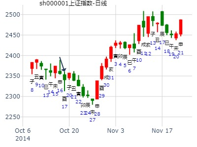
王报数55-88，问当天热点-
时间: 2024-10-17
干支: 甲辰年甲戌月甲寅日 (旬空: 子丑 )
山地剥 坤为地
六神 伏神 本 卦 变 卦
玄武 ▅▅▅▅▅ 妻财寅木 Ｏ→ ▅▅ ▅▅ 兄弟酉金 世
白虎 兄弟申金▅▅ ▅▅ 子孙子水 世 ▅▅ ▅▅ 子孙亥水
腾蛇 ▅▅ ▅▅ 父母戌土 ▅▅ ▅▅ 父母丑土
勾陈 ▅▅ ▅▅ 妻财卯木 ▅▅ ▅▅ 妻财卯木 应
朱雀 ▅▅ ▅▅ 官鬼巳火 应 ▅▅ ▅▅ 官鬼巳火
青龙 ▅▅ ▅▅ 父母未土 ▅▅ ▅▅ 父母未土
易经预测上证走势看盘交流（2016年12月26日-30日) 乐易
公历时间：2016年12月23日16时55分
干 支：丙申年 庚子月 己卯日 壬申时
旬 空：辰巳 辰巳 (申酉) 戌亥
乾宫：山地剥 坤宫：坤为地（六冲）
六神 伏 神 【本 卦】 【变 卦】
勾陈 ▄▄▄▄▄ 妻财丙寅木 O-> ▄▄ ▄▄ 兄弟癸酉金 世
朱雀 兄弟壬申金 ▄▄ ▄▄ 子孙丙子水 世 ▄▄ ▄▄ 子孙癸亥水
青龙 ▄▄ ▄▄ 父母丙戌土 ▄▄ ▄▄ 父母癸丑土
玄武 ▄▄ ▄▄ 妻财乙卯木 ▄▄ ▄▄ 妻财乙卯木 应
白虎 ▄▄ ▄▄ 官鬼乙巳火 应 ▄▄ ▄▄ 官鬼乙巳火
螣蛇 ▄▄ ▄▄ 父母乙未土 ▄▄ ▄▄ 父母乙未土
上九：硕果不食，君子得舆，小人剥庐。
象曰：君子得舆，民所载也。 小人剥庐，终不可用也。
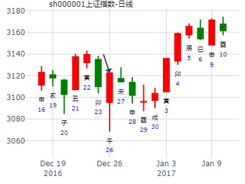
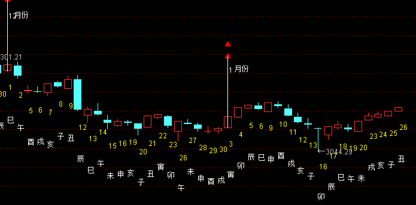
主帖标题: 测午日12.19 沪市大盘
公历起卦时间：2022年12月18日15时16分 (按农历时间起卦)
干支：壬寅年 壬子月 乙巳日 甲申时 （日空：寅卯）
乾宫：山地剥 坤宫：坤为地 (六冲)
六神 伏神 本 卦 变 卦
玄武 妻财丙寅木 ▅▅▅▅▅ ○→ 兄弟癸酉金 ▅▅ ▅▅ 世
白虎 兄弟壬申金 子孙丙子水 ▅▅ ▅▅ 世 子孙癸亥水 ▅▅ ▅▅
螣蛇 父母丙戌土 ▅▅ ▅▅ 父母癸丑土 ▅▅ ▅▅
勾陈 妻财乙卯木 ▅▅ ▅▅ 妻财乙卯木 ▅▅ ▅▅ 应
朱雀 官鬼乙巳火 ▅▅ ▅▅ 应 官鬼乙巳火 ▅▅ ▅▅
青龙 父母乙未土 ▅▅ ▅▅ 父母乙未土 ▅▅ ▅▅
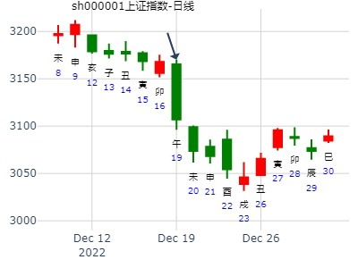